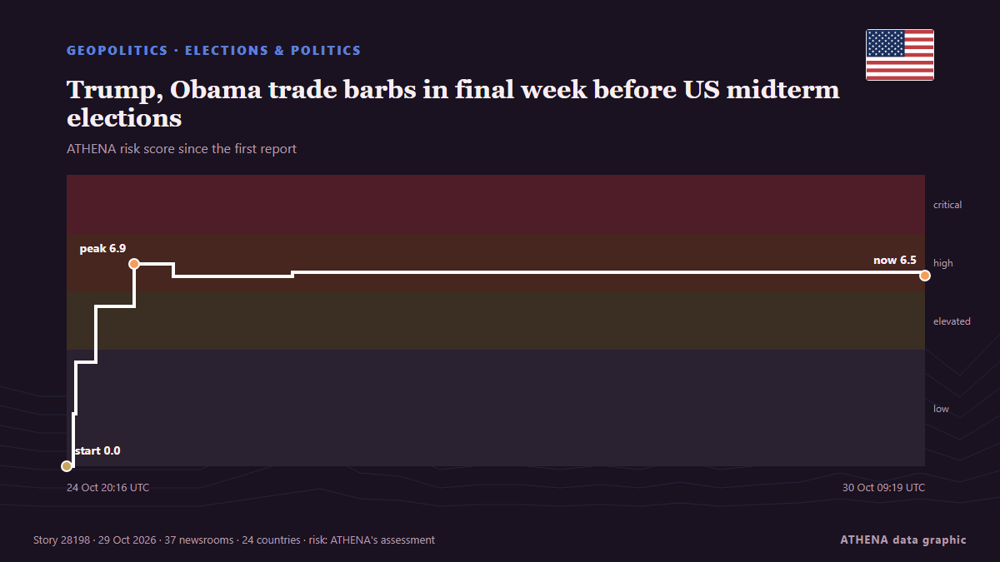

Trump, Obama trade barbs in final week before US midterm elections

WASHINGTON, United States (AFP) — Former United States (US) president Barack Obama delivered a scathing critique of his successor, Donald Trump, at a rally Saturday in Ohio to support Democratic… von Jamaica Observer
Unabhängig gemeldet von 37 Medien in 24 Ländern seit dem 23. Okt., zuerst von Politico; die Berichterstattung flaut ab. ATHENA stuft das Risiko als hoch ein (6.5/10), vor allem wegen der Schwere des beschriebenen Schadens und seiner geografischen und sektoralen Reichweite. Die Konfidenz liegt bei 90 % (hoch): 37 Medien bestätigen es unabhängig, bei einer mittleren Verlässlichkeit der Quellen von 74 %. Medien nach Land: Nigeria (4), Singapur (4), Frankreich (4). Berichterstattung: 23. Okt. bis 28. Okt., 125 Stunden.
Warum es wichtig ist: Sicherheits- und diplomatische Entwicklungen können Bündnisse, Handel und Märkte weit über die direkt beteiligten Länder hinaus verschieben.
Was sich geändert hat: 17 neue Berichte von 12 Redaktionen in den 24 Stunden bis 29. Okt..
Erste Schlagzeile: Obama blasts Trump’s ‘chaos and cruelty’ while campaigning for Democrats
Schlagzeilen werden auf Englisch angezeigt, wie veröffentlicht.
Auf einen Blick
Ausgewählt, bewertet und geschrieben nach der veröffentlichten Methodik von ATHENA. Kein Redakteur greift in einzelne Ereignisse ein. So entsteht ATHENA ›
| 23 Oct 03:59 UTC | 1 |
|---|---|
| 23 Oct 09:59 UTC | 0 |
| 23 Oct 15:59 UTC | 0 |
| 23 Oct 21:59 UTC | 0 |
| 24 Oct 03:59 UTC | 0 |
| 24 Oct 09:59 UTC | 0 |
| 24 Oct 15:59 UTC | 4 |
| 24 Oct 21:59 UTC | 8 |
| 25 Oct 03:59 UTC | 12 |
| 25 Oct 09:59 UTC | 5 |
| 25 Oct 15:59 UTC | 4 |
| 25 Oct 21:59 UTC | 0 |
| 26 Oct 03:59 UTC | 1 |
| 26 Oct 09:59 UTC | 1 |
| 26 Oct 15:59 UTC | 0 |
| 26 Oct 21:59 UTC | 1 |
| 27 Oct 03:59 UTC | 0 |
| 27 Oct 09:59 UTC | 2 |
| 27 Oct 15:59 UTC | 0 |
| 27 Oct 21:59 UTC | 1 |
| 28 Oct 03:59 UTC | 2 |
| 28 Oct 09:59 UTC | 5 |
| 28 Oct 15:59 UTC | 2 |
| 28 Oct 21:59 UTC | 5 |
| 29 Oct 03:59 UTC | 2 |
| 29 Oct 09:59 UTC | 6 |
| 24 Oct 20:16 UTC | 0.0 |
|---|---|
| 24 Oct 21:19 UTC | 1.8 |
| 24 Oct 21:39 UTC | 3.6 |
| 25 Oct 00:44 UTC | 5.5 |
| 25 Oct 06:41 UTC | 6.9 |
| 25 Oct 12:46 UTC | 6.5 |
| 26 Oct 07:17 UTC | 6.7 |
| 30 Oct 09:19 UTC | 6.5 |
| 30 Oct 09:19 UTC | 6.5 |
Warum diese Zahlen
Bedeutung
Risiko
Konfidenz
Die Berichterstattung – wer berichtete, und wann
Schlagzeile wie veröffentlicht · öffnet das Original- Politico · Vereinigte StaatenCan Angie Nixon prove Democrats can win in Florida?
- The Hill · Vereinigte StaatenObama endorses Nixon, Jolly in last-minute campaign boost
- Jamaica Observer · JamaikaObama blasts Trump’s ‘chaos and cruelty’ while campaigning for Democrats
- Vanguard · NigeriaObama blasts Trump’s ‘chaos and cruelty’ while campaigning for Democrats
- The Straits Times · SingapurObama blasts Trump’s ‘chaos and cruelty’ while campaigning for Democrats
- Al Jazeera English · KatarObama slams Trump’s ‘cruelty and corruption’ as he rallies Democrats
- Arab News · Saudi-ArabienObama blasts Trump’s ‘chaos and cruelty’ while campaigning for Democrats
- Middle East Eye · INTObama blames Trump for 'starting unnecessary war nobody asked for'
- RTÉ News · IrlandObama blasts Trump while campaigning for US midterms
- BBC News · Vereinigtes KönigreichObama attacks Trump as he campaigns for Democrats ahead of midterm elections
- The Straits Times · SingapurObama unloads on Trump while stumping for Democrats ahead of midterms
- MyJoyOnline · GhanaObama attacks Trump as he campaigns for Democrats ahead of midterm elections
- Rappler · PhilippinenObama unloads on Trump while stumping for Democrats ahead of midterms
- The Daily Star — page reader · BangladeschObama blasts Trump's 'chaos and cruelty' while campaigning for Democrats
- Oman Observer · OmanObama blasts Trump's 'chaos and cruelty'
- Business Recorder · PakistanObama unloads on Trump while stumping for Democrats ahead of midterms
- Vanguard · NigeriaObama blasts Trump’s ‘chaos and cruelty’ while campaigning for Democrats
- Punch · NigeriaObama criticises Trump over Iran war, rising prices
- IOL · SüdafrikaObama blasts Trump's 'chaos and cruelty' while campaigning for Democrats
- TheJournal.ie · IrlandObama criticises Trump's 'corruption' on campaign trail
- Channels TV · NigeriaObama Blasts Trump Over Iran War, Cost of Living at Midterm Rallies
- Al Jazeera English · KatarObama’s Ohio, Michigan speeches: Key takeaways on Trump, Iran war, midterms
- Dawn · PakistanTrump calls Obama ‘grossly incompetent’ after ex-president unloads on him at rallies ahead of US midterms
- Capital FM · KeniaObama attacks Trump as he campaigns for Democrats ahead of midterm elections
- The Straits Times · SingapurTrump invokes 9/11 in urging Michigan voters to oppose Muslim Senate candidate El-Sayed
- France 24 English · FrankreichObama hits campaign trail for democrats
- Oman Observer · OmanObama blasts Trump's 'chaos, cruelty' while in support of Democrats
- ABC News Australia · AustralienDonald Trump labels Obama 'incompetent' in post rally retaliation
- France 24 English · FrankreichMidterms: Obama campaigns for Democrats, slams Trump
- France 24 English · FrankreichMidterms: Obama campaigns for Democrats, slams Trump
- Taipei Times · TaiwanBarack Obama blasts Trump’s ‘chaos and cruelty’
- CNA (Channel NewsAsia) · SingapurTrump campaigns in Michigan a day after Obama rallies Democrats
- The Daily Star — page reader · BangladeschObama blasts Trump’s ‘chaos, cruelty’
- AzerNews · AserbaidschanObama and Trump exchange sharp criticism as US midterm elections approach
- France 24 English · FrankreichUS midterms: Obama blasts Trump's 'chaos and cruelty' while campaigning for Democrats
- PBS NewsHour · Vereinigte StaatenCandidates enter final week of campaigning with control of Congress at stake
- The Independent · Vereinigtes KönigreichTrump Mississippi rally interrupted by heckler: ‘Shove that ballroom up your a**’
- BBC News · Vereinigtes KönigreichTrump v Obama - which president has the star power to get out the vote?
- Havana Times · KubaBorder Conflicts & the USA Midterm Elections
- Türkiye Today · TürkeiBeginning of the end for Trump? Don’t count on the midterms